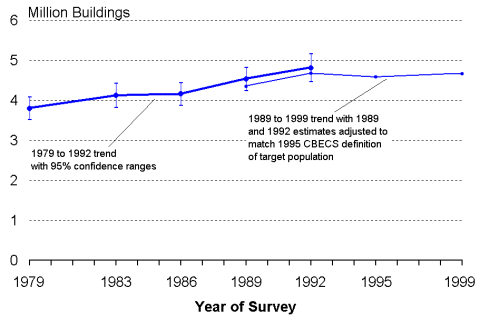
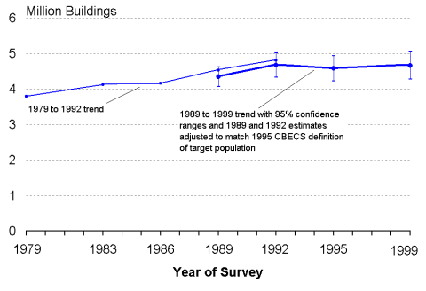

|
Background: Adjustment to data
|
Commercial Buildings Trend — DetailEach CBECS estimate has a range of uncertainty because the CBECS is a sample survey (see Overview of the Commercial Buildings Energy Consumption Survey for further discussion). Changes between successive surveys are often not confirmed because the uncertainties of the estimates exceed the amount of change; however, change is confirmed if the trend continued across several survey cycles and the total change exceeded the uncertainties. There was a statistically significant increase from 1979 to 1992 in the number of buildings (Figure 1). The entire 1979 to 1999 trend cannot be analyzed as a whole because the definition of the target population of commercial buildings was changed in 1995. But the 1989 to 1999 portion can be analyzed because sufficient information was collected in the 1989 and 1992 surveys to adjust those estimates to match the 1995 definition (Figure 2). The confidence ranges for 1989 (adjusted), 1992 (adjusted), 1995, and 1999 overlap; therefore, there is not a statistically significant difference (at the 95% level) among the four estimates, and the apparent decline in the number of buildings between 1992 and 1995 cannot be confirmed. Figure 1. 1979 to 1992 building trend with 95% confidence ranges  Energy Information AdministrationCommercial Buildings Energy Consumption Survey Figure 2. 1989 to 1999 building trend with 95% confidence ranges  Energy Information AdministrationCommercial Buildings Energy Consumption Survey
Return to “Trends in Buildings and Floorspace” Specific questions may be directed to:
Alan Swenson
Release date: 01/12/2000 If you are having any technical problems with this site, please contact the EIA webmaster at wmaster@eia.doe.gov.
|
|||||||||||||||||||||||||||||||||||||||||||||||||||||||